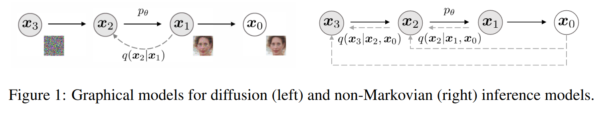

Understand DDMP from VLB
In the Diffusion-models-1 we have introduced the DDMP model
$$ X_t|X_{t-1} = \mathcal{N}(\sqrt{1-\beta_t}X_{t-1}, \beta_t I), \quad X_t|X_0 = \mathcal{N}(\sqrt{\bar{\alpha}_t} X_0, (1-\bar{\alpha}_{t})I), $$with $X_{0}\sim q_{0} = p_{data}$, $\alpha_{t} = 1-\beta_{t}$ and $\bar{\alpha}_{t} = \prod_{s=1}^t (1-\beta_{s})$.
The loss function is derived by minimizing the negative log-likelihood $-\log p_{\theta}(X_{0})$ with a variational lower bound $L_{VLB}$
$$ L_{VLB} = \mathbb{E}_{q}\left[ \log \frac{q(x_{1:T}|x_{0})}{p_{\theta}(x_{0:T})} \right] = \sum_{t=0}^T L_{t} $$with
$$ L_{t} = D_{KL}(q(x_{t}|x_{t+1},x_{0})\| p_{\theta}(x_{t}|x_{t+1})),\; 1\leq t\leq T-1. $$Since the conditional distribution $X_{t}|(X_{t-1}, X_{0})$ is Gaussian
$$ q(x_{t-1}|x_t, x_0) = \mathcal{N}(\tilde{\mu}_t(x_t, x_0), \tilde{\beta}_t I), $$where
$$ \begin{equation} \tilde{\mu}_t(x_t, x_0) := \frac{\sqrt{\alpha_t}(1-\bar{\alpha}_{t-1})}{1-\bar{\alpha}_t}x_t +\frac{\bar{\alpha}_{t-1}\beta_t}{1-\bar{\alpha}_t}x_0;\quad \tilde{\beta}_t:= \frac{1-\bar{\alpha}_{t-1}}{1-\bar{\alpha}_t}\beta_t. \end{equation} $$If we model the conditional distribution $X_{t-1}|X_{t}$ as a Gaussian $X_{t-1}|X_{t} \sim \mathcal{N}(\mu_\theta(X_t, t), \Sigma_\theta(X_t, t))$, the loss function is basically the KL-divergence between two Gaussian distributions, which has the closed form
$$ \begin{equation} L_{t} = \frac{1}{2\|\Sigma_{\theta}(x_{t},t)\|_{2}^2} \|\tilde{\mu}(x_{t},x_{0}) - \mu_{\theta}(x_{t},t)\|^2 + C. \end{equation} $$Because $q(x_t|x_0) = \mathcal{N}(x_t; \sqrt{\bar{\alpha}_t} x_0, (1-\bar{\alpha})I)$ we can express $x_{t}|x_{0}$ as $x_{t}(x_{0}, \epsilon) = \sqrt{ \bar{\alpha}_{t} }x_{0} + \sqrt{ 1-\bar{\alpha}_{t} }\epsilon$ for $\epsilon\sim\mathcal{N}(0, I)$, therefore we can rewrite $\tilde{\mu}_{t}(x_{t}, x_{0})$ as
$$ \tilde{\mu}_{t} = \tilde{\mu}(x_{0}, \epsilon) = \frac{1}{\sqrt{ \alpha_{t} }}\left( x_{t} - \frac{1-\alpha_{t}}{\sqrt{ 1-\bar{\alpha}_{t} }} \epsilon \right). $$Similarly, we can also model $\mu_{\theta}(x_{t}, t)$ as
$$ \mu_{\theta}(x_{t}, t) = \frac{1}{\sqrt{ \alpha_{t} }}\left( x_{t} - \frac{1-\alpha_{t}}{\sqrt{ 1-\bar{\alpha}_{t} }} \epsilon_{\theta}(x_{t,t}) \right), $$where $\epsilon_{\theta}$ is an approximation of the noise $\epsilon$. Overall, the loss function $L_{t}$ becomes $$
L_{t} = \mathbb{E}{x{0}, \epsilon} \left[\frac{(1-\alpha_{t})^2}{2 \alpha_{t}(1-\bar{\alpha}{t})|\Sigma{\theta}(x_{t},t)|{2}^2} | \epsilon - \epsilon{\theta}(\sqrt{ \bar{\alpha}{t} }x{0} + \sqrt{ 1-\bar{\alpha}_{t} }\epsilon,t)|^2 \right] + C. $$
Understand DDMP from score matching
Consider the random variable
$$ Y = X + \sigma Z, \quad X\sim P_{X}, \quad Z\sim \mathcal{N}(0,I). $$By definition, $p_{Y|X}$ is Gaussian, but in general $p_{X|Y}$ is not Gaussian since we did not assume $p_{X}$ is Gaussian. But $p_{X|Y}$ is approximately Gaussian in the limit of $\sigma\to 0$.
$$ p_{X|Y}(x|y) \approx \mathcal{N}(y + \sigma^2\nabla \log p_{Y}(y), \sigma^2 I). $$
See proof in [[#^08dcf7|Approximation Gaussian]]. And for $Y = \gamma X + \sigma Z$ with $\gamma \neq 0$, then in the limit of $\sigma\to 0$,
In the setting of DDMP, we know the forward process is
$$ X_t|X_{t-1} = \mathcal{N}(\sqrt{1-\beta_t}X_{t-1}, \beta_t I), \quad X_t|X_0 = \mathcal{N}(\sqrt{\bar{\alpha}_t} X_0, (1-\bar{\alpha})I), \quad \bar{\alpha}_{t} = \prod_{s=1}^t(1-\beta_{s}). $$If $\beta_{t}$ is small enough, approximately the backward process is
$$ p(x_{t-1}|x_{t}) \approx \mathcal{N}(\mu(x_{t},t), \beta_{t}I), $$with $\mu(x_{t},t) = \frac{1}{\sqrt{ 1-\beta_{t} }}(x_{t} - \beta_{t}\nabla \log p_{t}(x_{t}))$. Similarly, we can a model $p_{\theta}(x_{t-1}|x_{t})$ to learn it
$$ p_{\theta}(x_{t-1}|x_{t}) = \mathcal{N}(\mu_{\theta}(x_{t}, t), \Sigma_{\theta}(x_{t},t)), \quad \mu_{\theta}(x_{t},t) = \frac{1}{\sqrt{ 1-\beta_{t} }}(x_{t} - \beta_{t}s_{\theta}(x_{t},t)) $$Essentially, we are using $s_{\theta}$ to learn the score function $\nabla_{x}\log p$. Naturally, we can think about using the loss function MSE of means or KL-divergence. There is not a big difference between them, so we take KL-divergence as an example
$$ \begin{aligned} \mathcal{L}(\theta) &= \sum_{t=1}^T \lambda_{t} KL(p(x_{t-1}|x_{t}\|p_{\theta}(x_{t-1}|x_{t}))) \\ &= \sum_{t=1}^T\lambda_{t} \frac{1}{2\|\Sigma_{\theta}(x_{t},t)\|_{2}^2} \|\mu(x_{t},x_{0}) - \mu_{\theta}(x_{t},t)\|^2 + C\\ &= \sum_{t=1}^T\lambda_{t} \frac{(1-\alpha_{t})^2}{2 \alpha_{t}\|\Sigma_{\theta}(x_{t},t)\|_{2}^2} \| \nabla_{x}\log p_{t}(x_{t}) - s_{\theta}(x_{t},t)\|^2 + C \end{aligned} $$Here we see the form of score matching. However, the score function $\nabla_{x}\log p_{t}$ is inaccessible, so we cannot compute the above loss function. Recall that $X_{t}|X_{0}$ is a known Gaussian, thus we can try to use $\nabla_{x}\log p_{t|0}(x_{t}|x_{0})$ in the loss function. Moreover, for Gaussian distribution $Y\sim \mathcal{N}(\mu, \sigma^2 I)$, the score function can be easily computed as
$$ \nabla_{y}\log p_{Y}(Y) \overset{\mathcal{D}}{=} - \frac{\epsilon}{\sigma}, \quad \epsilon \sim \mathcal{N}(0,I). $$Like what we have done for DDPM VLB loss function, we use $\epsilon_{\theta} = -\sqrt{ 1-\bar{\alpha}_{t} } s_{\theta}$. Now we can rewrite the loss function as
$$ \begin{aligned} \mathcal{L}(\theta) &= \sum_{t=1}^T\lambda_{t} \frac{(1-\alpha_{t})^2}{2 \alpha_{t}\|\Sigma_{\theta}(x_{t},t)\|_{2}^2} \| \nabla_{x}\log p_{t}(x_{t}) - s_{\theta}(x_{t},t)\|^2 + C \\ &= \sum_{t=1}^T\lambda_{t} \frac{(1-\alpha_{t})^2}{2 \alpha_{t}\|\Sigma_{\theta}(x_{t},t)\|_{2}^2} \mathbb{E}_{x_{0}\sim p_{0}} \left[\| \nabla_{x}\log p_{t|0}(x_{t}|x_{0}) - s_{\theta}(x_{t},t)\|^2 \right] + C \\ &= \sum_{t=1}^T\lambda_{t} \frac{(1-\alpha_{t})^2}{2 \alpha_{t}\|\Sigma_{\theta}(x_{t},t)\|_{2}^2} \mathbb{E}_{x_{0}\sim p_{0}, \epsilon\sim\mathcal{N}(0,I)} \left[\| - \frac{\epsilon}{\sqrt{ 1-\bar{\alpha}_{t} }} - s_{\theta}(x_{t},t)\|^2 \right] + C \\ &= \sum_{t=1}^T\lambda_{t} \frac{(1-\alpha_{t})^2}{2 \alpha_{t} (1-\bar{\alpha}_{t})\|\Sigma_{\theta}(x_{t},t)\|_{2}^2} \mathbb{E}_{x_{0}\sim p_{0}, \epsilon\sim\mathcal{N}(0,I)} \left[\| \epsilon- \epsilon_{\theta}(\sqrt{ \bar{\alpha}_{t} } x_{0} + \sqrt{ 1-\bar{\alpha}_{t} }\epsilon,t)\|^2 \right] + C, \\ \end{aligned} $$which is exactly the VLB loss function of DDMP.
DDMP is VP SDE with SDE sampling
DDMP forward process in the limit $\beta_{t}\to 0$
$$ X_{t+1} = \sqrt{ 1-\beta_{t} } X_{t} + \sqrt{ \beta_{t} } Z_{t} \approx \left( 1-\frac{\beta_{t}}{2} \right)X_{t} + \sqrt{ \beta_{t} }Z_{t}. $$Therefore when the timestep goes to zero, the DDMP forward process converges to the following VP SDE:
$$ dX_{t} = -\frac{1}{2}\beta_{t} X_{t} dt + \sqrt{ \beta_{t} }dW_{t}. $$DDMP sampling process is
$$ \bar{X}_{t-1} = \frac{1}{\sqrt{ 1-\beta_{t} }}\left( \bar{X}_{t} - \frac{\beta_{t}}{\sqrt{ 1-\bar{\alpha}_{t} }} \epsilon_{\theta}(\bar{X}_{t},t) \right) + \sigma_{t} Z_{t}, $$where $\sigma_{t}$ a unlearned constant used in $\Sigma_{\theta}(x_{t},t) = \sigma_{t}^2I$. We set $\sigma_{t}^2 = \beta_{t}$. If $\beta_{t}$ is slowly varying and $\beta_{t}\to 0$, we have
$$ \bar{\alpha}_{t} = \prod_{s=0}^T (1-\beta_{s}) \approx \prod_{s=0}^T e^{-\beta_{s}} \approx \exp\left( -\int_{0}^t \beta_{s} ds\right). $$We the approximate the discrete DDMP sampling process as
$$ \bar{X}_{t-1} \approx \left( 1+\frac{\beta_{t}}{2} \right)\bar{X}_{t} - \frac{\beta_{t}}{\sqrt{ 1- \exp\left( -\int_{0}^t \beta_{s} ds\right)}} \epsilon_{\theta}(\bar{X}_{t}, t) + \sqrt{ \beta_{t} }Z_{t} $$This implies the reverse-time SDE
$$ d\bar{X}_{t} = \left( -\frac{\beta_{t}}{2} \bar{X}_{t} + \frac{\beta_{t}}{\sqrt{ 1- \exp\left( -\int_{0}^t \beta_{s} ds\right)}} \epsilon_{\theta}(\bar{X}_{t}, t) \right)dt + \sqrt{ \beta_{t} } d \bar{W}_{t}. $$By the Anderson’s theorem, we can get the reverse-time is
$$ \begin{aligned} d \bar{X}_{t} &= \left( -\frac{\beta_{t}}{2}\bar{X}_{t} - \beta_{t}\nabla_{x}\log p_{t}(\bar{X}_{t}) \right)dt + \sqrt{ \beta_{t} }d\bar{W}_{t} \\ &\approx \left( -\frac{\beta_{t}}{2}\bar{X}_{t} - \beta_{t}\nabla_{x}\log p_{t|0}(\bar{X}_{t}) \right)dt + \sqrt{ \beta_{t} }d\bar{W}_{t} \\ &\approx \left( -\frac{\beta_{t}}{2}\bar{X}_{t} + \beta_{t} \frac{\epsilon_{\theta}(\bar{X}_{t},t)}{\sigma_{t}} \right)dt + \sqrt{ \beta_{t} }d\bar{W}_{t} ;\quad \text{by } \nabla_{x}\log p_{t|0}(x) = - \frac{\epsilon}{\sigma_{t}},\\ \end{aligned} $$where $\sigma_{t}^2$ is the variance of $X_{t}|X_{0}$. We have stated in Diffusion-models-2#Examples with O-U process#VP SDE that the VP SDE has the property that $X_{t}|X_{0}$ follows a Gaussian distribution with
$$ X_{t}|X_{0} \sim \mathcal{N}\left(\exp\left( -\frac{1}{2}\int_{0}^t\beta_{s} ds\right) X_{0}, \left(1- \exp\left( -\int_{0}^t \beta_{s} ds\right)\right)I\right). $$Therefore substituting $\sigma_{t} = \sqrt{ 1- \exp\left( -\int_{0}^t \beta_{s} ds\right)}$ we get
$$ d \bar{X}_{t} \approx \left( -\frac{\beta_{t}}{2}\bar{X}_{t} + \beta_{t} \frac{\epsilon_{\theta}(\bar{X}_{t},t)}{\sqrt{ 1- \exp\left( -\int_{0}^t \beta_{s} ds\right)}} \right)dt + \sqrt{ \beta_{t} }d\bar{W}_{t} $$Therefore the reverse-time SDE derived from the sampling process of DDMP is consistent to the reverse-time SDE of VP SDE.
DDIM is VP SDE with ODE sampling

The loss function of DDPM depends on $q(x_{t}|x_{0})$, but not directly on the joint $q(x_{1:T}|x_{0})$. Thus DDIM explore alternative forward process that non-Markovian but with the same marginals $q(x_{t}|x_{0})$. Specifically,
$$ \begin{aligned} q_{\rho}(x_{1},\dots x_{T}|x_{0}) &= q_{\rho}(x_{T}|x_{0}) \prod_{t=1}^{T-1}q_{\rho}(x_{t}|x_{t+1}, x_{0}) \\ q_{\rho}(x_{T}|x_{0}) &= \mathcal{N}(\sqrt{ \bar{\alpha}_{t} }x_{0}, (1-\bar{\alpha}_{T})I) \\ q_{\rho}(x_{t-1}|x_{t}, x_{0}) &= \mathcal{N}\left( \sqrt{\bar{\alpha}_{t-1} }x_{0} + \sqrt{ 1-\bar{\alpha}_{t-1} - \rho_{t}^2 }\frac{x_{t}- \sqrt{ \bar{\alpha}_{t}}x_{0}}{\sqrt{ 1-\bar{\alpha}_{t} }} , \rho_{t}^2 I\right) \end{aligned} $$The transition kernel $X_{0}\mapsto X_{T}$ and $(X_{0},X_{t+1})\mapsto X_{t}$ are chosen to make sure that the marginals of DDIM match the marginals of DDMP:
$$ q(x_{t}|x_{0}) = \mathcal{N}(\sqrt{ \bar{\alpha}_{t} }x_{0}, (1-\bar{\alpha}_{t})I). $$We can prove it by induction:
$$ \begin{align} q_{\rho}(x_{t+1}|x_{0}) &= \mathcal{N}(\sqrt{ \bar{\alpha}_{t+1} }x_{0}, (1-\bar{\alpha}_{t+1})I) \\ q_{\rho}(x_{t}|x_{0}) &= \int q_{\rho}(x_{t+1}|x_{0}) q_{\rho}(x_{t}|x_{t+1}, x_{0}) dx_{t+1}. \end{align} $$Since both $q_{\rho}(x_{t+1}|x_{0})$ and $q_{\rho}(x_{t}|x_{t+1}, x_{0})$ are Gaussian, we have that $q(x_{t}|x_{0})$ is Gaussian with mean $\sqrt{ \bar{\alpha}_{t} }x_{0}$ and variance $(1-\bar{\alpha}_{t})I$.
Since DDIM and DDPM have the same conditional marginals, their conditional and unconditional score functions are the same. Given a DDMP, it is unnecessary to retrain it. The contribution of DDIM is to find a faster sampling method.
The DDIM sampling is done with
$$ p_{\theta}(x_{t-1}|x_{t}) = q_{\rho}(x_{t-1}|x_{t}, x_{0}). $$However, the $x_{0}$ is unknown. But it has an unbiased estimator through
$$ \begin{aligned} X_{t} &= \sqrt{ \bar{\alpha}_{t} }X_{0} + \sqrt{ 1-\bar{\alpha}_{t} }\epsilon \\ \hat{X}_{0} &= \mathbb{E}[X_{0}|X_{t}] \approx \frac{X_{t} - \sqrt{ 1-\bar{\alpha}_{t}}\epsilon_{\theta}(X_{t}, t)}{\sqrt{ \bar{\alpha}_{t} }} \end{aligned}, $$where $\epsilon_{\theta}$ is our trained model that predicts the added noise from $X_{t}$. Then the sampling process is given via:
$$ \begin{align} \bar{X}_{t-1} &= \sqrt{ \bar{\alpha}_{t-1} }\hat{X}_{0} + \sqrt{ 1-\bar{\alpha}_{t-1} - \rho_{t}^2 } \frac{\bar{X}_{t} - \sqrt{ \bar{\alpha}_{t} }X_{0}}{\sqrt{ 1-\bar{\alpha}_{t} }} + \rho_{t} Z_{t} \\ &= \sqrt{ \bar{\alpha}_{t-1} }\hat{X}_{0} + \sqrt{ 1-\bar{\alpha}_{t-1} - \rho_{t}^2 } \frac{\bar{X}_{t} - \sqrt{ \bar{\alpha}_{t} }\hat{X}_{0}}{\sqrt{ 1-\bar{\alpha}_{t} }} + \rho_{t} Z_{t} \\ &= \sqrt{ \bar{\alpha}_{t-1} }\hat{X}_{0} + \sqrt{ 1-\bar{\alpha}_{t-1} - \rho_{t}^2 } \epsilon_{\theta}(\bar{X}_{t}, t)+ \rho_{t} Z_{t} \\ \end{align} $$Recall that in DDMP, $q(x_{t-1}|x_{t}, x_{0}) = \mathcal{N}(\tilde{\mu}_{t}(x_{t},x_{0}), \tilde{\beta}_{t}I)$, therefore we have
$$ \tilde{\beta}_{t} = \rho_{t}^2 = \frac{1-\bar{\alpha}_{t-1}}{1-\bar{\alpha}_{t}}\beta_{t}. $$It other words, when $\rho_{t}^2 = \frac{1-\bar{\alpha}_{t-1}}{1-\bar{\alpha}_{t}}\beta_{t}$ the sampling process becomes DDMP. The special case of $\rho_{t} = 0$ makes the sampling process deterministic, which is named the DDIM. If we rewrite the above sampling process in one-step form, we have
$$ \begin{align} \bar{X}_{t-1} &= \frac{1}{\sqrt{ 1-\beta_{t} }} \bar{X}_{t} - \left( \frac{\sqrt{ 1-\bar{\alpha}_{t} }}{\sqrt{1-\beta_{t}}} - \sqrt{ 1-\bar{\alpha}_{t-1} } \right)\epsilon_{\theta}(\bar{X}_{t},t) \\ &= \frac{1}{\sqrt{ 1-\beta_{t} }} \bar{X}_{t} - \left( \frac{\sqrt{ 1-\bar{\alpha}_{t} }}{\sqrt{1-\beta_{t}}} - \sqrt{ 1- \frac{\bar{\alpha}_{t}}{1-\beta_{t}} } \right)\epsilon_{\theta}(\bar{X}_{t},t) \end{align} $$If $\beta_{t}$ is slowly varying and $\beta_{t}\to 0$, we have
$$ \begin{align} \bar{X}_{t-1} &\approx \left( 1 + \frac{\beta_{t}}{2} \right)\bar{X}_{t} - \frac{\beta_{t}}{2\sqrt{ 1-\bar{\alpha}_{t} }}\epsilon_{\theta}(\bar{X}_{t},t) \\ &\approx \left( 1+\frac{\beta_{t}}{2} \right)\bar{X}_{t} - \frac{\beta_{t}}{2\sqrt{ 1- \exp\left( -\int_{0}^t \beta_{s} ds\right)}} \epsilon_{\theta}(\bar{X}_{t}, t) \\ &\approx \left( 1+\frac{\beta_{t}}{2} \right)\bar{X}_{t} + \frac{\beta_{t}}{2}\nabla_{x}\log p_{t|0}(\bar{X}_{t}) \end{align} $$It agrees with the reverse-time ODE of VP SDE:
$$ dX_{t} = - \frac{\beta_{t}}{2} X_{t} dt + \sqrt{ \beta_{t} }dW_{t}. $$Noise conditional score network (NCSN) is VE SDE with SDE sampling
The forward-time process of NCSN is
$$ X_{t} = X_{t-1} + \sqrt{ \sigma_{t}^2 - \sigma_{t-1}^2} Z_{t},\quad X_{0}\sim p_{data}. $$Since $\sqrt{ \sigma_{t}^2 - \sigma_{t-1}^2} = \sqrt{\frac{ \sigma_{t}^2 - \sigma_{t-1}^2}{\Delta_{t}}} \sqrt{ \Delta_{t} }$, it converges to
$$ dX_{t} = \sqrt{ \frac{d(\sigma_{t}^2)}{dt} }dW_{t}. $$The sampling process of NCSN is defined as
$$ \begin{aligned} \bar{X}_{t-1} &= \bar{X}_{t} +(\sigma_{t}^2 - \sigma_{t-1}^2)s_{\theta} + \sqrt{ \sigma_{t}^2 - \sigma_{t-1}^2} Z_{t} \\ &\approx \bar{X}_{t} +(\sigma_{t}^2 - \sigma_{t-1}^2)\nabla_{x}\log p_{t}(\bar{X}_{t}) + \sqrt{ \sigma_{t}^2 - \sigma_{t-1}^2} Z_{t} \\ \end{aligned} $$It can be written as
$$ d\bar{X}_{t} = - \frac{d(\sigma_{t}^2)}{dt} \nabla_{x}\log p_{t}(\bar{X}_{t}) dt + \sqrt{\frac{d(\sigma_{t}^2)}{dt} }d\bar{W}_{t}, $$which is the reverse-time SDE of VE SDE.
Supplementary
Tweedie’s formula
Consider the random variable
$$ Y = X + \sigma Z, \quad X\sim p_{X}, \quad Z\sim\mathcal{N}(0,I), $$where $p_{X}$ is not necessarily Gaussian, then
$$ \begin{align} \mathbb{E}[X|Y] &= Y + \sigma^2 \nabla_{y}\log p_{y}(Y) \\ \mathrm{Var}(X|Y) &= \sigma^2I + \sigma^4 \nabla_{y}^2\log p_{y}(Y). \end{align} $$Easily, we can see that if $Y = \gamma X+\sigma Z$, $\gamma\neq 0$, then we have
$$ \begin{align} \mathbb{E}[X|Y] &= \frac{1}{\gamma}(Y + \sigma^2 \nabla_{y}\log p_{y}(Y)) \\ \\ \mathrm{Var}(X|Y) &= \frac{\sigma^2}{\gamma^2}(I + \sigma^2\nabla_{y}^2\log p_{y}(Y)). \end{align} $$See proof here
Approximation Gaussian
^08dcf7
$$ \begin{aligned} p_{X|Y}(x) &= \frac{p_{Y|X}(y) p_{X}(x)}{p_{Y}(y)} \\ &= \frac{p_{Y|X}(y) p_{X}(x)}{\int p_{Y|X}(y)p_{X}(x)dx} \\ \end{aligned} $$Note that $p_{Y|X}$ is Gaussian and
$$ \begin{aligned} p_{Y|X} p_{X}(x) &= \frac{1}{(2\pi \sigma)^{d/2}}\exp\left( -\frac{1}{2\sigma^2} \|y-x\|^2 \right) p_{X}(x) \\ &= \frac{1}{(2\pi \sigma)^{d/2}}\exp\left( -\frac{1}{2\sigma^2} \|y-x\|^2 \right) (p_{X}(y) + \langle \nabla p_{X}(y), x-y \rangle + O(\|x-y\|^2) ) \end{aligned} $$Then the denominator can be calculated as $\text{denom} = p_{X}(y) + O(\sigma^2)$ since
$$ \begin{aligned} \int \frac{1}{(2\pi \sigma)^{d/2}}\exp\left( -\frac{1}{2\sigma^2} \|y-x\|^2 \right) p_{X}(y) dx &= p_{X}(y) \\ \int \frac{1}{(2\pi \sigma)^{d/2}}\exp\left( -\frac{1}{2\sigma^2} \|y-x\|^2 \right) (x-y) dx &= 0 \\ \int \frac{1}{(2\pi \sigma)^{d/2}}\exp\left( -\frac{1}{2\sigma^2} \|y-x\|^2 \right) O(\|x-y\|^2) &= O(\sigma^2). \end{aligned} $$It follows that
$$ \begin{aligned} p_{X|Y}(x) &= \frac{1}{(2\pi \sigma)^{d/2}}\exp\left( -\frac{1}{2\sigma^2} \|y-x\|^2 \right) \frac{p_{X}(y) + \langle \nabla p_{X}(y), x-y \rangle + O(\|x-y\|^2)}{p_{X}(y)+ O(\sigma^2)} \\ &= \frac{1}{(2\pi \sigma)^{d/2}}\exp\left( -\frac{1}{2\sigma^2} \|y-x\|^2 \right) (1 + \langle \nabla\log p_{X}(y), x-y \rangle + \text{h.o.t.} ) \\ &= \frac{1}{(2\pi \sigma)^{d/2}}\exp\left( -\frac{1}{2\sigma^2} \|x-y\|^2 \right) \exp(\langle \nabla \log p_{X}(y), x-y \rangle ) + \text{h.o.t.}\\ &= \frac{1}{(2\pi \sigma)^{d/2}}\exp\left( -\frac{1}{2\sigma^2} \|x-y - \sigma^2\nabla\log p_{Y}(y)\|^2 + \text{h.o.t.} \right) + \text{h.o.t.} \\ &\approx \mathcal{N}(y+\sigma^2\nabla\log p_{Y}(y), \sigma^2 I). \end{aligned} $$